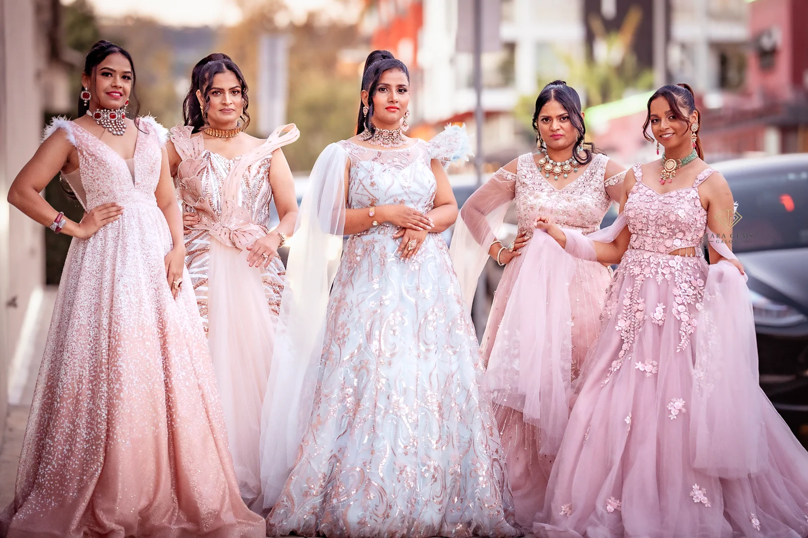
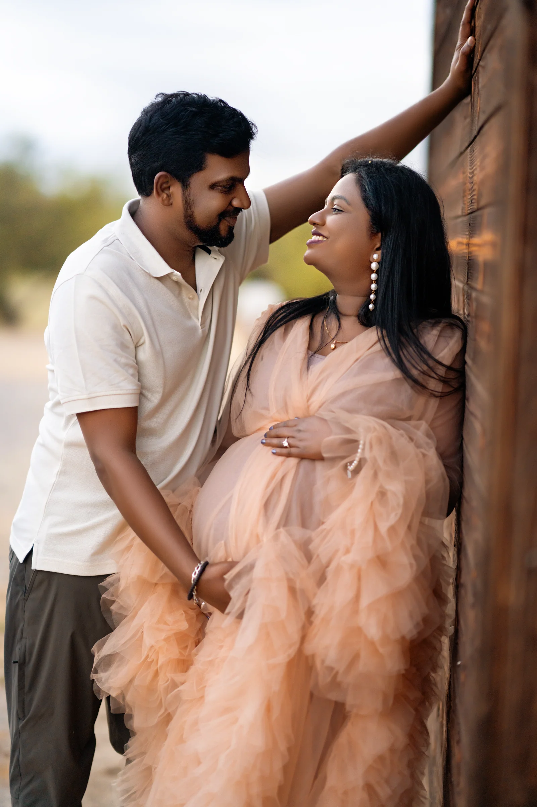

View larger ↗
View larger ↗Weddings · New beginnings · Stories of connection
Stories of
Love & Joy
Every celebration. Every beautiful chapter.





Use the photograph dots or left and right arrow keys to browse. Press Space while the carousel is focused to pause or resume automatic rotation.
01 / Selected work
Stories, in photographs.
Showing Weddings
Choose a collection. Select any photograph to view it larger.


02 / The feeling
For the wildly present
Photographs that feel like memory.
The quiet glances, shared laughter, and people who make a moment yours. Wedding celebrations, growing families, and new beginnings—held in photographs.
Every season of your story
Life, beautifully held.
01 / Weddings
The celebration.
Traditions, connection, and the moments in between.
02 / MaternityThe beginning.
A space for anticipation and a new chapter.
03 / FamilyYour people.
Everyday closeness and unscripted joy.
04 / Dreamy ProjectsThe expression.
Classical dance, movement, and stories told through gesture.
In motion
Stories in motion.
Wedding highlights, family films, and short reels — stories told through Sony’s lens.
Explore Films & Reels ↗Meet Sony Kurapati
Your story,
seen with care.
For me, photography has always been about more than just taking pictures. It’s about understanding people, feeling the moment, and capturing emotions that words often can’t express.
With 7 years of experience in photography, 4 years in videography, and a passion for drone cinematography, I’ve learned that the most meaningful moments are often the ones that happen naturally, without a pose or a plan.
More about me ↗Good to know
Your next chapter.
Wedding coverage will begin with a personal enquiry and a tailored quote. Visit Hire Me to send Sony your plans by email.
Dedicated session pages are available to explore. Packages, availability, and secure online booking will be added once confirmed.